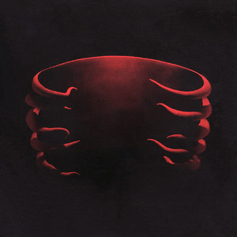
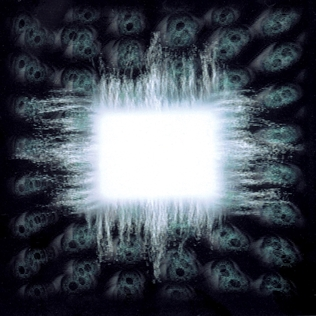
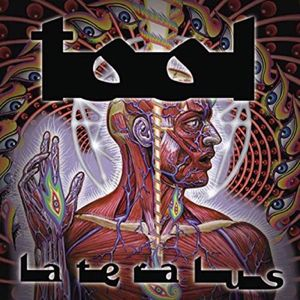
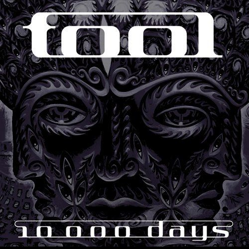
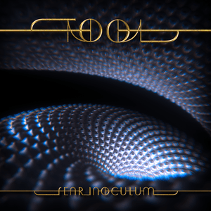

Discografia
Undertow

Lançado em 1993, Undertow foi o primeiro álbum completo do TOOL e apresentou ao público a combinação de peso, atmosfera sombria e experimentação que marcaria a banda. O disco aborda temas como alienação, abuso, repressão e conflitos internos, muitas vezes apresentados através de imagens desconfortáveis e provocativas.
É o único álbum de estúdio do TOOL com Paul D'Amour no baixo. Entre suas faixas mais conhecidas estão "Sober", "Prison Sex" e "Undertow". O álbum também marcou o início da colaboração visual de Adam Jones com os videoclipes da banda, especialmente em "Sober" e "Prison Sex".
Ænima

Ænima, lançado em 1996, expandiu radicalmente a identidade do TOOL. O álbum combina crítica social, humor ácido, espiritualidade e reflexões sobre transformação pessoal, enquanto suas longas composições aprofundam a atmosfera construída em Undertow.
Foi o primeiro álbum do TOOL com Justin Chancellor, que substituiu Paul D'Amour no ano anterior. A capa apresenta a obra Smoke Box, do artista Cam de Leon, e a produção visual do álbum reforçou a importância das artes plásticas dentro do universo da banda. "Stinkfist", "Forty Six & 2" e "Ænema" tornaram-se algumas das músicas mais conhecidas do grupo.
Lateralus

Em Lateralus, lançado em 2001, o TOOL levou sua música para uma direção ainda mais progressiva e experimental. O álbum explora crescimento, consciência, transcendência e a tentativa de ultrapassar os limites da percepção humana. Suas composições trabalham intensamente com mudanças de ritmo e estruturas matemáticas.
A faixa-título ficou especialmente associada à sequência de Fibonacci, enquanto "Schism", "The Grudge" e "Parabola" se tornaram algumas das músicas mais emblemáticas da banda. A própria embalagem do álbum acompanha seu conceito: nas edições físicas, uma sobreposição translúcida permite visualizar diferentes camadas do corpo humano. Lateralus possui 78 minutos e 51 segundos, sendo um dos trabalhos mais extensos da discografia.
10,000 Days

Lançado em 2006, 10,000 Days continua a exploração espiritual do TOOL, mas apresenta um lado particularmente pessoal e contemplativo. A morte, a fé, o sofrimento, a aceitação e a relação entre o indivíduo e algo maior aparecem de diferentes maneiras ao longo do álbum.
O título está ligado ao período de aproximadamente 27 anos que corresponde ao retorno de Saturno, conceito associado a ciclos de transformação na astrologia. A sequência "Wings for Marie" e "10,000 Days" foi inspirada na mãe de Maynard James Keenan e em sua experiência de vida marcada pela fé e pela doença. A capa foi criada pelo artista Alex Grey e acompanha a proposta psicodélica e espiritual do disco.
Fear Inoculum

Depois de treze anos de espera, o TOOL retornou em 2019 com Fear Inoculum. O álbum mantém a complexidade característica da banda, mas adota uma abordagem mais lenta, extensa e contemplativa. Seus temas giram em torno do medo, envelhecimento, transformação, mortalidade e da necessidade de confrontar aquilo que nos limita.
O disco possui apenas sete faixas na edição em CD, mas sua versão digital inclui três interlúdios adicionais. A edição especial física foi concebida e dirigida por Adam Jones e incluía uma tela HD integrada à embalagem, além de outros elementos multimídia. A versão em CD possui 79 minutos e 10 segundos; a versão digital, com os interlúdios, chega a 86 minutos e 43 segundos.
Tabela da discografia
| Álbum | Ano | Duração | Gravadora |
|---|---|---|---|
| Undertow | 1993 | 69:13 | Zoo Entertainment |
| Ænima | 1996 | 77:18 | Zoo / Volcano |
| Lateralus | 2001 | 78:51 | Volcano |
| 10,000 Days | 2006 | 75:45 | Tool Dissectional / Volcano |
| Fear Inoculum | 2019 | 79:10 | Tool Dissectional / Volcano / RCA |
As durações correspondem às edições principais de referência; Fear Inoculum possui versões com durações diferentes devido aos interlúdios adicionados nas edições digitais.